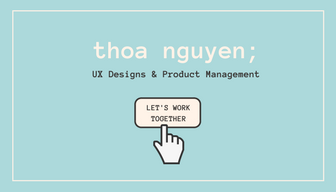

Hello! I’m Thoa Nguyen, a student currently pursuing a double degree in Informatics and Business Administration at the University of Washington. My understanding of technology and business combined with a focus in human-computer interactions drives my passion for UX/UI design and product management.
Oddly enough, I fell in love with design during a business case competition. Analyzing systems and global market penetration for EY was interesting, but I had so much fun wire-framing and producing a quality prototype. My interests in creating applications lead me to classes like Design Thinking, Client-side Web Development, and Mobile App Design. Outside of those courses, I challenged myself to learn unfamiliar tools like Sketch and participate in local Hackathons.
Connect with me or download my resume below
Managed a development team to create a RESTful web application to help students search through UW course evaluations. Used MySQL to store evaluation records and presented the data in an actionable format through ReactJS. Wire framed a prototype using Figma and displayed the app through Invision.
Used the Google Maps API along with the Trails and Flickr API to enable users to query images of local hiking trails. Built log in system for storing current users and authenticating via Google Firebase. Styled the application using HTML, CSS and Twitter Bootstrap.
Project aimed to improve on existing information technology and gaming platforms in order to help immigrant children learn English effectively (Awarded Most Social Impact - Informatics Project Fair). Designed a website to encapsulate research, games and apps into a single location. Gathered feedback from stakeholders, wrote product specification documents, and created plans for new features and integrations.
Used the Porter's Five Forces and SWOT analysis framework to create growth strategies for Snow Jogger delivery company. Suggested a branding campaign focusing on efficiency, health, and innovative technology. Researched data and developed delivery zone maps for Seattle and Boston.
GPA: 3.46
GPA: 4.0
My design process begins with understanding the target users and end with many iterations. Many of my ideas are outlandish or simply not great, but I continuously revise and make improvements with every draft.